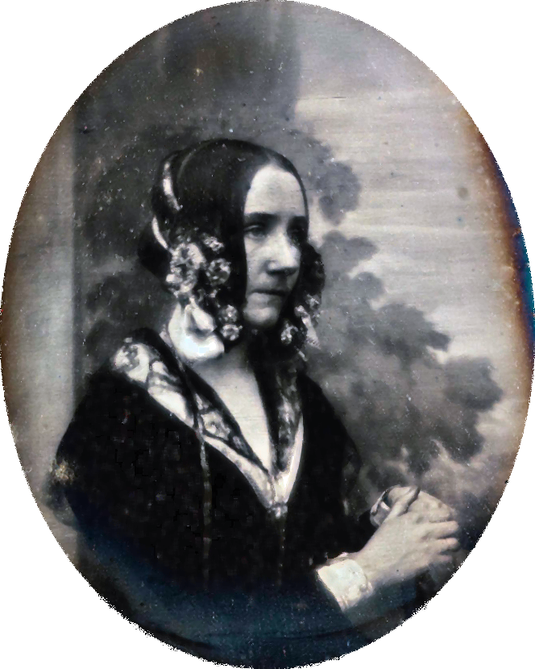

Ada Lovelace
Born The Hon. Augusta Ada Byron 10 December 1815 London, England
Died 27 November 1852 (aged 36) Marylebone, London, England
Resting place Church of St. Mary Magdalene, Hucknall, Nottingham, England
Known for Mathematics, computing
Spouse(s) William King-Noel, 1st Earl of Lovelace (m. 1835)
- Daughter of poet Lord Byron and Lady Byron.
- Studied mathematics and science from the age of 4.
- At the age of 12 Ada Lovelace wrote "Flyology", an illustrated guide for human flight.
- At the age of 17 Ada was mentored by Charles Babbage, known as the inventor of the computer.
- At the age of 28 Ada published the first algorithm to be carried out by a machine.
- Ada predicted a much broader role for Babbage's invention than merely calculating numbers.
- Suffered from uterine cancer in August 1852 and passed away on November 27, 1852.
- Recognized for her contributions to computing in a book by B.V.Bowden published in 1953.
- A high-order computer programming language, "ADA" was named after Ada Lovelace in 1979.